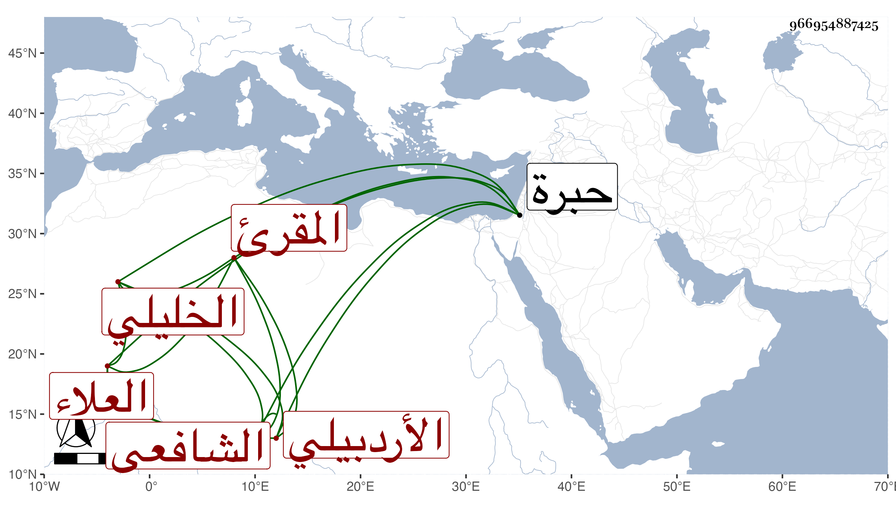

0902Sakhawi.DawLamic.ITO20230111-ara1.EIS1600.966954887425
Biography ID: 966954887425
926
علي بن قاسم العلاء الأردبيلي الأصل الخليلي الشافعي المقرئ ويعرف كأبيه وبالبطائحي . اشتغل عند الكمال بن أبي شريف وغيره وتميز سيما في القراءات بحيث صنف فيها وأخذها عن جماعة مع تفنن في العربية والصرف والفرائض والحساب والقراءات والفقه ومن محافيظه المنهاج والشاطبية وأقرأ الطلبة . مات بالخليل في يوم الأربعاء ثامن ربيع الأول سنة ست وتسعين ، ووصفه الصلاح الجعبري بالشيخ الإمام العالم العلامة المقرئ وصدر ترجمته بأبي الحسن البطائحي وقد زاد على الخمسين .
